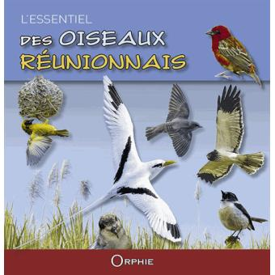

Les oiseaux de la Réunion avec Yabalex
La traque de la faune réunionnaise
photo © Yabalex
Il faut avoir de la persévérance pour faire de belles photos d'oiseaux. Repérer les lieux, rester à l'affut et espérer la meilleure lumière. Dix ans que Yabalex fait des photos animalières de la réunion et presque cinq ans qu'il en diffuse une sélection sur son portfolio en ligne : faune-reunion.com.
En septembre dernier le portfolio s'est enrichit d'un blog. Blog où le jeune Alexandre partage régulièrement des anegdotes, ses aventures sur le terrain et ses réalisations. La Réunion est riche en oiseaux qu'on ne voit nulle part ailleurs. J'en ai décrit quelques uns ici comme le papangue ou le tuit-tuit. Yabalex en a une collection beaucoup plus complète.
Des photos partagées en grand format.
Depuis le temps qu'il expose ses photos en ligne Yabalex est devenu connu pour ses clichés et s'est on lui a proposé de les exposer dans plusieurs galeries de l'île et même sur des grands panneaux en extérieur comme sur les grilles du jardin d'État à Saint-Denis.
Ce mois-ci Yabalex expose au Conservatoire Botanique National de Mascarin à Saint-Leu. Il y présente des nouveaux clichés qu'il a appelé Instants furtifs, moments magiques. Ces moments magiques, qu'il partage en image, il les mérite, tant la préparation est importante et l'attente peut être longue. Il raconte qu'il a déjà attendu jusque 7 heures pour saisir un papangue au Tevelave. Chaque expo demande des mois de préparation.
Au delà des oiseaux
Au delà des oiseaux, Yabalex a exposé une exposition de chiens en mouvement, des rokés comme on dit en créole. Il a aussi couvert le Piton Maïdo qui a souffert d'un incendie en octobre 2011. Il y retourne souvent pour voir la nature reprendre sa place, une place que Yabalex sait si bien mettre en valeur et partager.
Un livre avec les photos de Yabalex
 La Société d'Étude Ornithologique de La Réunion (SEOR), association agréée « Protection de l'Environnement » a sorti un livre en 2015 présentant 50 oiseaux de l'île. C'est Yabalex qui a été choisi pour illustrer ces 50 fiches d'oiseaux de la Réunion avec ses magnifiques photos. Il vous en parle longuement sur son blog.